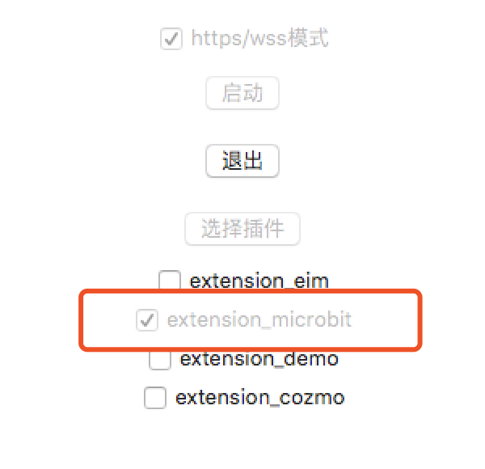
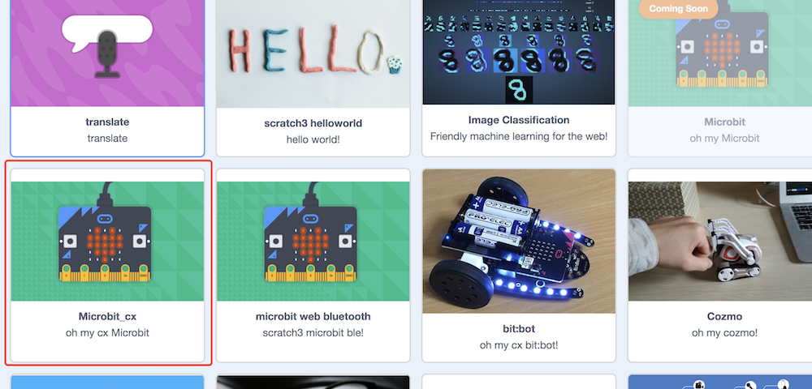
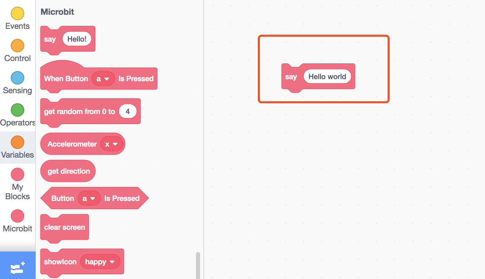

使用说明(usage)
我们以使用预加载的插件为例，在此我们演示如何在scratch3.0中使用micro:bit
步骤1: 打开Scratch3 Lab
推荐使用Chrome浏览器点击打开Scratch3 Lab，目前Scratch官方团队在目录支持更多浏览器版本，现阶段使用Chrome浏览器效果最佳
目前Scratch3 Lab的服务器在香港，第一次加载，你需要耐心等待一段时间(之后打开就快了)

步骤2: 打开scratch3_adapter
双击打开scratch3_adapter，点击启动

步骤3: https检验(只需要验证一次)
如果你是第一次使用scratch3_adapter，则需要点击scratch3_adapter菜单栏中的https检验

在自动打开的页面里依次点击高级 > 继续前往127.0.0.1（不安全）

完成之后，scratch3_adapter就可以与Scratch3 Lab建立连接了
步骤4: 连接micro:bit，加载插件
使用数据线将micro:bit接入电脑，下载microbit_cx.hex并拖入micro:bit中
ps: Windows7用户注意(Mac和Windows10用户可以跳过),为了能发现并连接micro:bit，需要安装驱动(和mu-editor相同)
完成后在scratch3_adapter中点击加载micro:bit插件

步骤5: 打印hello world
现在让我们利用Scratch3 Lab控制micro:bit，让它在点阵屏上打印hello world
选择对应的scratch3插件:Microbit_cx(我们同时制作了若干中micro:bit，包括使用web蓝牙的)

接着拓展积木，点击运行

结语
这个例子完整展示了scratch3_adapter的使用流程
- 接入你的硬件(可以是任何开源硬件)
- 启动scratch3_adapter,加载对应硬件插件
- 打开scratch3.0网页
- 开始在scratch3.0中与硬件交互
其中步骤2是关键，如果你接入的硬件目前没有默认插件支持它，你可以自己来写，scratch3_adapter允许你将任何硬件接入scratch3.0中，别害怕，需要的代码很少也很简单，详情参见开发手册